The main impact of a 200 basis-point (2.00 percentage-point) rise in United States interest rates on Germany is a 0.04% drop in GDP by the 11th quarter — a limited spillover. Germany ranks 18th of the countries modelled by absolute GDP effect, and the band is minimal. The shock is a US monetary tightening, and Germany's response is the classic profile of a small open economy with deep financial linkages to the US: a shallow real-activity hit, a persistent competitiveness gain, and a financial-conditions squeeze that is larger than the output effect. The peak GDP loss is −0.0401% versus baseline in Q11, with the path starting at −0.0008% in Q1 and still −0.0096% by Q20. This is not a recession-scale shock for Germany; it is a modest drag transmitted mainly through trade and asset prices.
Demand and trade. Household consumption falls gradually, peaking at −0.0205% in Q11 and easing to −0.0051% by Q20 — a real-income effect rather than a collapse in spending. Private investment is the weakest domestic demand component, peaking at −0.1127% in Q10 and still −0.0242% by Q20, consistent with a higher cost of capital and weaker expected demand. Net exports — the trade balance, since this model does not split imports from exports — improve steadily, peaking at +0.1403% in Q14 and remaining +0.124% by Q20. Government spending rises slightly, peaking at +0.0089% in Q11, a small automatic-stabiliser response, while government debt drifts up to +0.0038% by Q18. The composition is clear: domestic demand weakens, the external balance strengthens, and the net GDP effect stays small because the two partly offset.
External / FX. The real exchange rate — currency strength — appreciates persistently, reaching +0.6035% by Q16 and still +0.59% by Q20. That lines up with the improving net exports: a stronger currency normally hurts competitiveness, but here the trade balance improves anyway, which tells you the net-export gain is driven by relative demand and price dynamics rather than by a weaker euro. The currency appreciation is the dominant persistent external effect in the model.
Labour. Employment falls to −0.0256% by Q14 and remains −0.0169% by Q20. Unemployment rises to +0.023 percentage points by Q14 and stays +0.0146pp by Q20 — a small labour-market loosening, not a sharp break. Real wages rise steadily, peaking at +0.1138% in Q19 and still +0.1136% by Q20. That combination — falling employment alongside rising real wages — reflects the disinflationary impulse: nominal wage growth slows less than prices, so real wages edge up even as hiring weakens.
Prices. CPI inflation rises initially, peaking at +0.026 percentage points in Q8, then fades and turns slightly negative by Q19 (−0.0006pp). Domestic inflation follows the same shape, peaking at +0.0182pp in Q8 and turning negative by Q19. Firms' marginal cost falls to −0.0239% by Q11 and remains −0.0057% by Q20. The initial inflation bump is a pass-through effect; the later fade reflects weaker demand and lower marginal costs.
Financial conditions. The local policy rate is unchanged at 0.0pp throughout — the model holds German monetary policy fixed, so all adjustment comes through other channels. Government 2-year, 5-year, and 10-year yields are also flat at 0.0pp across all quarters. Bond prices fall sharply, peaking at −0.609% in Q8 before fading to −0.022% by Q20, the mechanical result of higher discount rates. Equity prices fall to −0.2335% by Q8 and remain −0.0252% by Q20. Tobin's Q — the value of installed capital — falls to −0.0789% by Q10 and stays −0.0169% by Q20. House prices decline slowly and persistently, reaching −0.0327% by Q18 and −0.0319% by Q20. Bank credit contracts to −0.016% by Q17 and remains −0.0148% by Q20. Lending spreads widen only marginally, peaking at +0.0002pp by Q16. The financial-conditions hit is real but modest, and it is concentrated in asset prices rather than in credit rationing.
Sectoral and capital. Services GDP falls to −0.0274% by Q11 and eases to −0.0066% by Q20. Manufacturing GDP is the hardest-hit sector, falling to −0.1783% by Q16 and still −0.1748% by Q20 — a much larger and more persistent decline than services, consistent with manufacturing's greater exposure to trade and investment demand. The capital stock declines very gradually, reaching −0.0057% by Q20, the slow accumulation of weaker investment.
Timing. The GDP hit is largest in Q11 at −0.0401%, and it has mostly faded by Q20, when the loss is −0.0096%. There is no sign change — GDP stays below baseline throughout — but the effect is clearly decaying. The equity and bond-price peaks arrive earlier, in Q8, while the currency and manufacturing peaks arrive later, in Q16. The shock's footprint is therefore front-loaded in financial markets and back-loaded in trade and production.
Close. These are model impulse responses versus baseline, not forecasts. They describe how Germany's modelled economy deviates from its own baseline path after a 200bp US rate rise, holding German policy fixed. The headline is a limited spillover: a 0.04% GDP loss at peak, a persistent currency appreciation, a manufacturing drag, and a modest financial-conditions tightening.
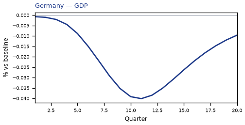
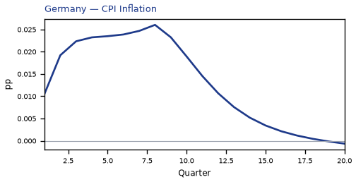
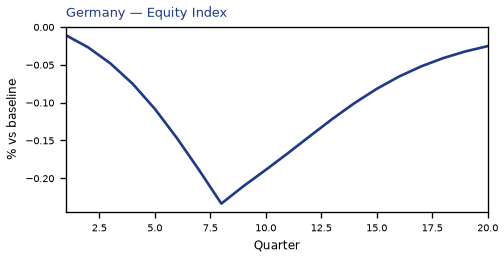
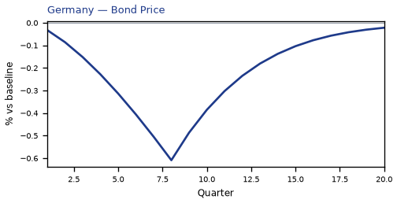
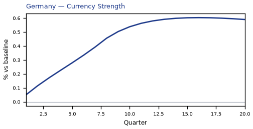
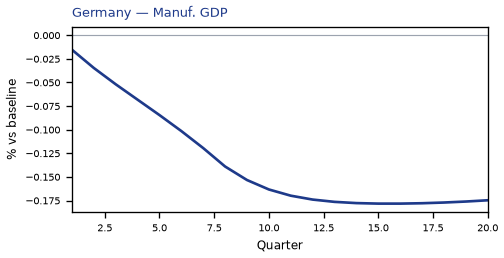
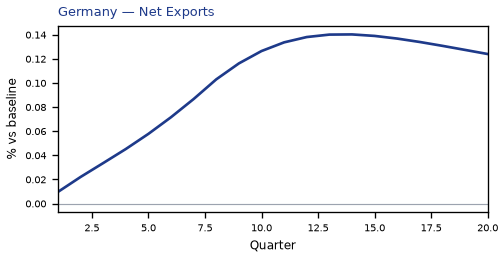
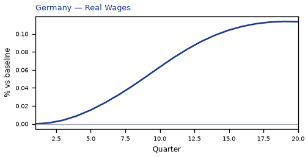
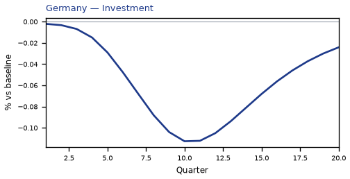
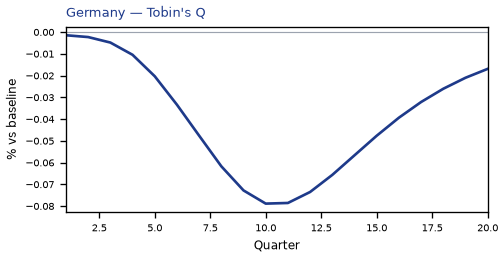
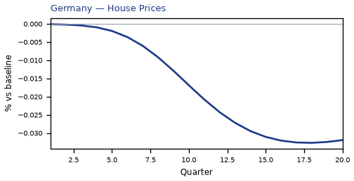
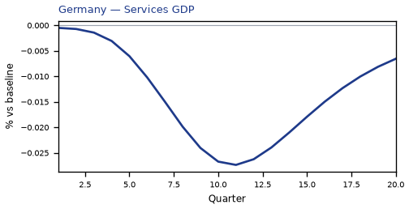
source=live · global_macro_v5 · contract v6 · Q1–Q20 JSON · not financial advice